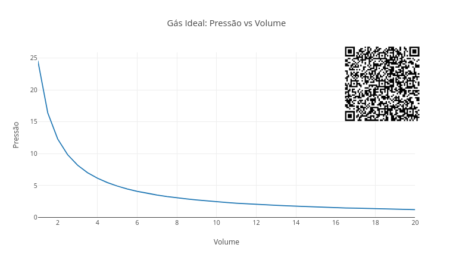
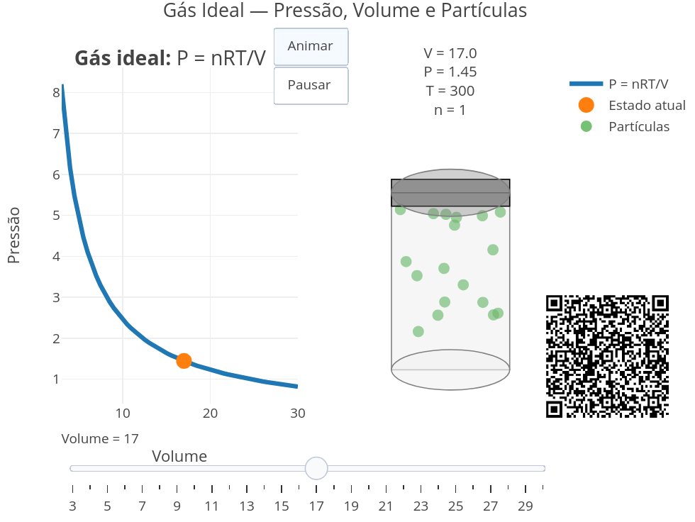
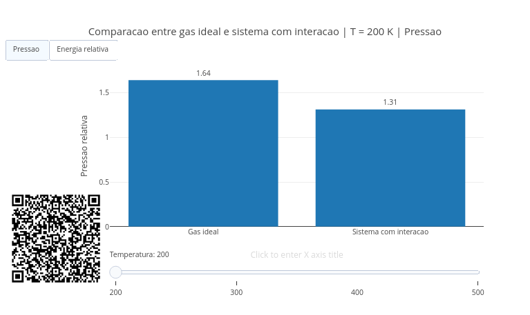
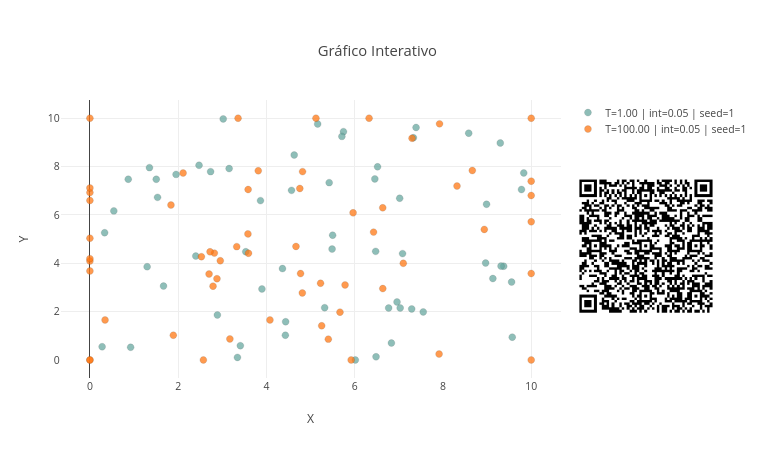
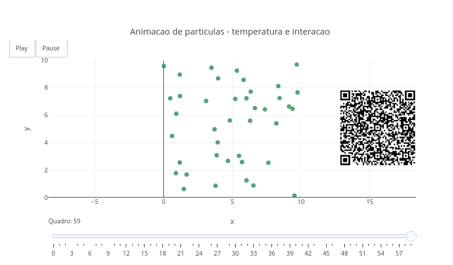

5 Termodinâmica, Gases e Soluções
Você já percebeu que uma bomba de bicicleta esquenta quando o ar é comprimido, ou que um spray aerossol fica gelado enquanto é usado, e também que algumas substâncias parecem “desaparecer” na água, alterando a temperatura da mistura ?
Mágica ?! Não, Termodinâmica. Um conceito que se traduz como energia se transformando o tempo todo. A Termodinâmica estuda como calor, pressão, volume, temperatura e matéria se relacionam em sistemas físicos e químicos. Ela aparece em motores, geladeiras, pneus, atmosferas planetárias, metabolismo celular, cozimento de alimentos, mudanças climáticas e até no funcionamento do próprio corpo humano.
Neste capítulo, você irá explorar esses mundos invisíveis. Como a pressão e volume se relacionam em gases, como partículas reais diferem de modelos ideais, como diferentes condições alteram cenários termodinâmicos, e como processos físicos podem ser visualizados em movimento. E isso lhe permitirá enxergar a matéria como um sistema dinâmico de partículas, colisões, energia e transformações.
Depois de explorar, você consegue:
- reconhecer como pressão, volume e temperatura se relacionam em sistemas gasosos;
- interpretar a equação dos gases ideais como uma forma condensada de várias regularidades experimentais;
- distinguir calor, temperatura, energia interna e trabalho sem reduzi-los a sinônimos;
- perceber que um sistema pode trocar energia com o meio de modos diferentes;
- compreender que soluções envolvem interações entre partículas e, por isso, nem sempre seguem comportamentos ideais;
- comparar o comportamento mais livre de um gás com o comportamento mais interativo de uma solução;
- interpretar qualitativamente por que algumas dissoluções aquecem o meio, enquanto outras o resfriam;
- utilizar simulações computacionais para visualização interativa dos conceitos abordados.
O app de JSPlotly abaixo mostra a relação entre pressão e volume de um gás, uma das mais importantes da Termodinâmica.

Ao alterar o espaço disponível para as partículas, a pressão muda automaticamente, o que revela no gráfico que pressões maiores levam a volumes menores. Essa é a famosa relação inversa entre pressão e volume descrita pela Lei de Boyle:
\[ P_1*V_1=P_2*V_2 \tag{5.1}\]
Agite antes de usar
Execute o script original e depois o altere para diferentes valores de temperatura (200, 500, 800, por ex). Observe as diferenças.
const T = 300;
const n = 1;Altere agora a quantidade de matéria n e veja como a pressão responde (0.5, 2, por ex).
O script usa a Equação Geral dos Gases Ideais, um conceito teórico aplicado a vários temas e áreas, desde a Física clássica até o metabolismo celular:
\[ PV=nRT \tag{5.2}\]
Para calcular a pressão, basta reorganizar a equação:
\[ P=\frac{nRT}{V} \tag{5.3}\]
O gráfico resultante forma uma hipérbole, mostrando uma relação inversa entre as variáveis. Isso significa que a pressão aumenta quando o volume diminui, e vice-versa. E também informa que a temperatura e a quantidade de gás influenciam positivamente a pressão.
Para o app, o script percorre diferentes valores de volume:
for (let v = 1; v <= 20; v += 0.5)Para cada valor de volume, calcula-se a pressão:
P.push((n * R * T) / v);Os valores são armazenados em listas:
V.push(v);
P.push(...)A lógica de programação envolve a escolha de um volume, o cálculo da pressão corresponedente, o armazenamento do resultado, um laço de repetição (*loop*) para criar novos pontos do gráfico, e o desenho final da curva.
Você pode seguir esse pequeno tutorial para utilizar o aplicativo.
- Rode o script com os valores originais;
- Observe o formato da curva;
- Diminua a temperatura;
- Veja como a curva “abaixa”;
- Aumente a temperatura;
- Observe o aumento da pressão;
- Altere a quantidade de matéria (
n); - Compare diferentes panoramas;
- Observe especialmente o comportamento em pequenos volumes.
Exercitando-se acima, você compreenderá rapidamente que comprimir um gás aumenta muito sua pressão, o que qualquer dona ou dono de casa evidencia cozinhando com panela de pressão. A seguir, alguns cenários para você se divertir…e “sem pressão”.
- Compressão intensa. Na condição térmica abaixo, observe os menores volumes do gráfico. Por que pequenas reduções de volume aumentam tanto a pressão ?
const T = 300;- Gás quente. Suba a temperatura para 700. Por que gases mais quentes exercem maior pressão ?
const T = 700;- Poucas partículas. Menos partículas significam menos colisões ?
const n = 0.3;- Muito gás em pouco espaço. Por que recipientes fechados podem se tornar perigosos quando aquecidos ?
const n = 3;
const T = 500;Ainda que o mecanismo seja invisível, o gráfico simula colisões microscópicas que ocorrem quando há variação de volume. Quando esse diminui, as partículas ficam mais próximas, as colisões aumentam, e a pressão cresce. Já quando a temperatura aumenta, as partículas se movem mais rapidamente, as colisões ficam mais intensas, e a pressão aumenta ainda mais. Assim, a curva traduz o comportamento coletivo de bilhões de partículas invisíveis.
Ou até bem mais do que isso, já que o mol, a unidade do *Sistema Internacional de Unidades* para quantidade, representa 6,02 x 10 \(^{23}\) moléculas. Ou a bagatela de seissecentos e dois sextilhões de moléculas…ou ainda 602.000.000.000.000.000.000.000 moléculas !! Ou ainda…e essa poucos sabem, praticamente o mesmo valor do peso de Marte, em kilogramas (útil isso, não ?!).
O que acha de dar uma incrementada na representação da Figura 5.2 ? Não para acrescentar conceitos teóricos, mas dar um “charme” à sua visualização, além de usabilidade, e estilo ! Veja na Figura 5.3 como uma mesma ideia pode ser vista de formas distintas usando linguagem de programação.

A equação do gases ideais é a mesma da Equação 5.3. Mas agora, você tem um cilindro comprimível com um pistão, algumas partículas em seu interior, um botão para animar e outro para pausar a animação, e um controle deslizante (slider) para selecionar o volume do cilindro. Ao deslocar o slider, perceba que o cilindro comprime ou expande auxiliado por um pistão (o retângulo cinza superior), simulando exatamente o efeito de variação interna da pressão pela Equação 5.3. Aqui não é necessário um tutorial, pois você já sabe o que fazer. Além de ajustar o slider, pode também alterar os valores de n e T no editor códigos. Então divirta-se com essa versão animada e visual da equação geral dos gases.
A equação dos gases ideais da Figura 5.2 propõe uma situação no mínimo bastante curiosa, e já traduzida pelo próprio nome: gases ideais. Um gás ideal é um conceito físico e imaterial. Ou seja, ele não existe no mundo real, pois a condição ideal pressupõe limitações impossíveis de ocorrer. Isso porque um gás ideal é formado por partículas tão pequenas que não possuem massa, e são muito afastadas uma das outras que não interagem entre si.
Por conseguinte, um gás ideal é um modelo teórico simplificado para explicar as relações de pressão, volume, temperatura e quantidade num gás “perfeito” (Equação 5.2). Mas o mundo costuma ser menos perfeito que isso. Quando se assume que o gás possui partículas reais capazes de interagir entre si, o conceito deixa de ser ideal e cai no mundo real… ou do gás real. Uma maneira de compreender como o gás real se comporta em relação ao gás ideal está ilustrada pelo app de JSPlotly da Figura 5.4.

Nesse modelo de gases reais, partículas podem se atrair, se repelir ou trocar energia de maneiras que o modelo ideal não consegue representar. Também no script você compara um gás ideal com um gás real, esse um sistema com interação entre partículas, e observa o que muda quando as partículas deixam de se comportar como pontos independentes.
Agite antes de usar
Execute o script com os valores originais e depois altere a const interacao para valores de 0.05, 0.30, e 0.60.
const V = 10;
const n = 1.0;
const interacao = 0.20;Depois use o slider para alterar a temperatura absoluta (em graus Kelvin, K). Observe como a diferença entre o gás ideal e o sistema com interação muda em cada cenário. Contrastando com a Equação 5.3 para um gás ideal, no sistema com interação a variação da pressão conta com um fator associado à interação:
\[ P_{\text{interação}} = P_{\text{ideal}}(1 - \text{interação}) \tag{5.4}\]
Essa é uma simplificação didática, apenas. Ela não pretende reproduzir os detalhes de um gás real, mas apenas te ajudar a visualizar que interações entre partículas podem modificar o comportamento previsto pelo modelo ideal.
A função principal do script é:
function calcularEstado(T) {
const P_ideal = (n * R * T) / V;
const P_real = P_ideal * (1 - interacao);
const E_ideal = T;
const E_real = T * (1 - 0.5 * interacao);
return {
T: T,
pressao: [P_ideal, P_real],
energia: [E_ideal, E_real]
};
}Mas se você achar interessante a descrição de uma função que modele o mundo dos gases reais, conheça a Equação de van der Waals que segue:
\[ \left( P + \frac{n^2 a}{V^2} \right) (V - nb) = nRT \tag{5.5}\]
Nessa Equação 5.5, \(V_{m}\) é o volume molar, \(T\) é a temperatura, \(R\) é a constante universal dos gases - 8,31 \(J*mol^{-1}K^{-1}\) - \(a\) é um parâmetro de atração, e \(b\) um parâmetro de volume.
Observe que o que diferencia a equação de gases ideais da de gases reais são os parâmetros \(a\) (atração) e \(b\) (volume) das partículas. Se você atribuir valor nulo a ambos (zero), a equação se torna a de gases ideais.
Voltando para o script da Figura 5.4, para cada temperatura o código calcula a pressão do gás ideal, a pressão do sistema com interação, a energia relativa do gás ideal, e a energia relativa do sistema com interação. Depois, esses valores aparecem em barras comparativas. O slider altera a temperatura, enquanto os botões alternam a exibição entre pressão e energia relativa. Se quiser um tutorial rápido para mexer no app:
- Rode o script com os valores originais;
- Observe as barras de pressão;
- Use o slider para mudar a temperatura;
- Veja que a pressão aumenta quando a temperatura aumenta;
- Clique em Energia relativa;
- Compare o gás ideal com o sistema com interação;
- Volte para Pressão;
- Altere
interacaono código; - Rode novamente;
- Observe como o aumento da interação amplia a diferença entre os modelos.
Veja que o modelo ideal deixa de descrever bem o sistema quando as partículas interagem muito. Alguns cenários são também propostos para seu estudo.
- Interação quase desprezível. Quando a interação é muito pequena, o sistema se aproxima do gás ideal ?
const interacao = 0.02;Interação moderada. Mude
interacaopara 0.2. A diferença entre ideal e interativo já é visível ?Interação intensa. Agora mude
interacaopara 0.6. O modelo ideal começa a falhar de forma evidente ?Temperatura baixa. Use o slider em 200 K. Em temperaturas menores, a energia relativa reduzida fica mais evidente ?
Temperatura alta. Agora mude para 500 K. A temperatura aumenta os dois modelos da mesma forma ou mantém diferenças proporcionais ?
O gráfico mostra que *modelos científicos são aproximações*. O gás ideal é útil porque simplifica o sistema. Mas essa simplicidade depende de algumas condições, tais como partículas muito afastadas, baixa interação entre moléculas, pressões moderadas, e temperaturas suficientemente altas. Quando essas condições deixam de valer, interações microscópicas passam a influenciar grandezas macroscópicas, como pressão e energia. A título de curiosidade, uma forma de se enxergar a diferença entre gás, líquido e sólido se dá pela proximidade de suas partículas constituintes. Pare e pense como isso soa tão simples.
O script usa dois recursos importantes da biblioteca Plotly.js de JavaScript: frames e updatemenus. Os frames guardam diferentes estados do gráfico:
const framesPressao = estados.map(function(est, i) {
return {
name: "P" + i,
data: [...]
};
});Cada frame representa uma temperatura diferente. Os botões escolhem o tipo de variável mostrada e o slider escolhe a temperatura, permitindo uma visão comparativa.
label: "Pressao"
label: "Energia relativa"Retomando o início desse capítulo, podemos afimar agora que os sprays gelam porque há uma expansão rápida (trabalho com perda de energia), o sal dissolve podendo esfriar ou aquecer, e que o ar esquenta ao ser comprimido. Quando falamos em gases, muitas vezes começamos por variáveis como pressão, volume e temperatura. Quando falamos em termodinâmica, o foco se desloca para calor, trabalho e energia interna. Quando falamos em soluções, surgem concentração, dissolução e interação entre partículas. Apesar de consistirem panoramas bastante distintos, todos possuem características em comum, já que dizem respeito à partículas que se organizam, se movimentam e trocam energia com o ambiente.
Assim, de gases para soluções, a Termodinâmica emprega relações comuns para explicar o comportamento da matéria, e distintas apenas em complexidade crescente. E “jamais” abandona a constante universal \(R\) dos gases ! Apesar dessa constante trazer a palavra “gases” estampada no peito, seu valor é diretamente relacionado ao número de Avogadro (N\(_A\); 6,02x10\(^{-23}\)) para quantidades (mol) por outra constante, a constante de Boltzmann (\(k_ b\), 1,38x10\(^{-23}\) m\(^2\) kg s\(^{-2}\) K\(^{-1}\)).
Quer ver ? Multiplique ambas e verá que o resultado aproxima-se do valor da constante geral dos gases ideais:
\[ R = k_b *N_A \tag{5.6}\]
Assim como foi feito para a Figura 5.3, também é possível uma visualização mais clara para o comportamento de um gás real, o que é proposto no app da Figura 5.5 abaixo. Ele não “roda” uma animação como a da Figura 5.3, mas propõe uma visão comparativa sem gráficos pelo editor.

O código agora cria pequenos “mundos microscópicos” contendo partículas em movimento que dependem de temperatura, intensidade de interação, quantidade de partículas, bem como de condições iniciais aleatórias. Observe então padrões emergindo do movimento coletivo das partículas.
Agite antes de usar
Execute o script original, depois altere os parâmetros e empilhe cenários diferentes pelo botão add do JSPlotly.
const T = 1.0;
const interacao = 0.05;
const N = 60;Por exemplo, alterando a temperatura (0.5, 1.5, 2.2) e observando as cores e a dispersão das partículas. Veja que a temperatura está ligada ao movimento das partículas. Quanto maior a temperatura, maiores as velocidades, colisões e a dispersão do sistema. Além disso, o parâmetro interacao controla forças simplificadas entre as partículas. Essa representação mostra como um sistema de pontos independentes visto para gases ideais passa a apresentar um comportamento coletivo de um sistema com interação para gases reais.
Para ententer um pouco como funciona o script, as partículas começam em posições aleatórias:
x.push(10 * rnd());
y.push(10 * rnd());Depois recebem velocidades proporcionais à temperatura:
vx.push((rnd() - 0.5) * 1.8 * T);
vy.push((rnd() - 0.5) * 1.8 * T);Em seguida, o sistema evolui em pequenos passos:
x[i] = x[i] + 0.08 * vx[i];
y[i] = y[i] + 0.08 * vy[i];Quando partículas ficam muito próximas, surgem interações:
const f = interacao / d2;Isso produz pequenas forças entre elas. A cor também muda continuamente com a temperatura, seguindo um padrão comum em Química. Para temperaturas menores os pontos ficam azulados, e para temperaturas maiores, os pontos ficam avermelhados (termocromismo). Essa é uma estratégia interessante para transformar números em comportamento visual. Globalmente, a lógica do algoritmo envolve uma geração pseudoaleatória de valor, atualização iterativa, colisões com paredes, forças simplificadas entre partículas, e o mapeamento contínuo de cor.
Para usar o app, experimente esse pequeno tutorial:
- Rode o script original;
- Observe a distribuição das partículas;
- Aumente a temperatura (
T); - Veja como as partículas ficam mais dispersas;
- Observe a mudança gradual de cor;
- Aumente
interacao; - Veja como o sistema se torna mais “organizado” ou perturbado;
- Aumente o número de partículas (
N); - Use o botão add para comparar cenários diferentes no mesmo gráfico;
- Experimente diferentes valores iniciais em
seed(semente).
E no fundo, veja como o comportamento coletivo pode surgir apenas de regras simples entre partículas. Seguem alguns cenários para exploração do app.
- Sistema frio. Por que partículas frias parecem menos agitadas ?
const T = 0.4;Sistema quente. Mude para T = 2.2. Como o aumento da energia altera a dispersão do sistema ?
Pouca interação. O sistema se aproxima de partículas independentes ?
const interacao = 0.01;Forte interação. Mude para
interacao= 1.5. Interações intensas produzem padrões coletivos mais evidentes ?Muitas partículas. O comportamento global muda quando o sistema fica mais “povoado” ?
const N = 150;- Comparação empilhada. Use T = 0.5 e sobreponha com T = 2.0 pelo botão
add.
O script aproxima a ideia de que comportamentos coletivos podem surgir de sistemas reais. Esses comportamentos são evidenciados pelas regiões mais dispersas ou mais concentradas, pelas diferenças associadas à temperatura, e pelos padrões relacionados à interação. Esse tipo de abordagem aparece em vários temas diferentes, como em Física estatística, dinâmica molecular, simulação de fluidos, ciência dos materiais, biologia celular e modelagem climática. São os chamados sistemas complexos, e que podem surgir de regras microscópicas muito simples.
Uma animação para gases reais
Vamos lá ! Confesse que o app da Figura 5.3 para gases reais estava bem mais legal que o de gases reais da Figura 5.5 acima, não ? Então, por que não considerar uma animação também para o comportamento coletivo de interação desse último ?

O script transforma a Termodinâmica em uma animação dinâmica de partículas interagindo em tempo real. Elas se movem, colidem com as paredes, influenciam umas às outras e mudam de comportamento conforme a temperatura. Essa movimentação sob interação faz com que o comportamento microscópico coletivo produza propriedades macroscópicas observáveis.
Agite antes de usar
Execute o script original e use os botões Play e Pause para observar o movimento das partículas. Assim como para o script da Figura 5.5, altere depois a temperatura e o efeito de interacao.
const T = 1.2;
const interacao = 0.04;
const N = 40;Observe que o script tenta representar a ideia de que a temperatura está associada à energia cinética média das partículas. Quanto maior a temperatura, maior a velocidade média, as colisões e a agitação do sistema. Além disso, o parâmetro interacao introduz forças simplificadas entre partículas, permitindo mostrar o comportamento coletivo mais complexo para um gás real. A visualização ocorre na animação por movimento e cor. A cor muda conforme a temperatura: azul (sistema frio), passando por verde (moderado), laranja (quente), até vermelho (muito energético).
Se quiser entender como o algoritmo produz a animação, as partículas começam em posições aleatórias:
x.push(10 * rnd());
y.push(10 * rnd());Depois recebem velocidades relacionadas à temperatura:
vx.push((rnd() - 0.5) * 1.6 * T);
vy.push((rnd() - 0.5) * 1.6 * T);O sistema evolui em pequenos passos temporais:
x[i] = x[i] + 0.10 * vx[i];
y[i] = y[i] + 0.10 * vy[i];Quando partículas se aproximam, surgem interações:
const f = interacao / d2;Cada quadro da animação é armazenado em:
frames.push({...})Isso permite ao JSPlotly reproduzir o sistema como uma animação contínua.
Para “brincar” com a animação:
- Rode o script original;
- Clique em
Play; - Observe o movimento coletivo;
- Use
Pausepara analisar um quadro específico; - Aumente a temperatura
T; - Veja como as partículas ficam mais rápidas;
- Observe a mudança de cor associada à temperatura;
- Aumente
interacao; - Veja como o comportamento coletivo muda;
- Aumente o número de partículas
N; - Observe como o sistema se torna mais “denso”.
Perceba que propriedades macroscópicas podem surgir apenas do movimento microscópico de partículas. Cenários ?
- Sistema frio. Como partículas frias se comportam visualmente ?
const T = 0.4;Sistema quente. Mude T para 2.4. O aumento da energia torna o sistema mais caótico ?
Interação quase nula. O sistema se aproxima do comportamento de um gás ideal ?
const interacao = 0.01;Forte interação. Mude
interacaopara 1.20. As partículas começam a influenciar fortemente umas às outras ?Sistema muito “povoado”. Como o aumento do número de partículas altera colisões e padrões ?
const N = 120;- Comparação visual. Compare T = 0.6 com T = 2.0. É possível sentir visualmente a diferença de temperatura apenas observando o movimento ?
O script traz também um panorama interessante para temperatura, já que sua modificação impacta visualmente em velocidade, colisão, dispersão e agitação das partículas no simulador. Da mesma forma, a interação das partículas também gera um efeito coletivo.
Para essa seção de divagações e descobertas, segue um elenco mais “real” do que “ideal”.
- E se o gás deixasse de ser ideal justamente quando a pressão se tornasse muito alta ?
- E se partículas começassem a interagir tão fortemente que o sistema passasse a se comportar mais como um líquido do que como um gás ?
- E se o aumento da temperatura fosse suficiente para reorganizar completamente o movimento coletivo das partículas ?
- E se pequenas diferenças microscópicas produzissem comportamentos macroscópicos gigantescos ?
- E se pressão, temperatura e volume fossem apenas manifestações visíveis de bilhões de colisões invisíveis acontecendo o tempo todo ?
- E se soluções líquidas escondessem processos semelhantes, com partículas dissolvidas alterando energia, organização e equilíbrio do sistema ?
- E se motores, atmosferas, metabolismo celular, mudanças climáticas e até o funcionamento do próprio corpo fossem consequência das mesmas ideias físicas exploradas nesses scripts do capítulo ?
Os conceitos desse capítulo podem ser revisitados em muitos outros contextos, como numa simples panela de pressão, por exemplo. Ao aumentar a pressão interna, a água pode atingir temperaturas maiores antes de entrar em ebulição intensa. Cilidros de ar comprimido também mostram que reduzir volume e elevar pressão envolve armazenamento de energia e exige cuidados de segurança. Já bolsas térmicas instantâneas funcionam porque certos processos de dissolução ou mistura absorvem energia, enquanto outros a liberam. E o que dizer de calibrar os pneus após rodar um bocado de estrada ? Com o pneu quente, a ar dentro da câmara está expandido, informando uma pressão errada no calibrador do posto de gasolina ou borracharia, já que essa decairá quando o pneu esfriar.
Quando pensamos em animais e plantas, é possível perceber que gases, pressão parcial e difusão aparecem em processos biológicos fundamentais. Geladeiras e aparelhos de ar-condicionado também são exemplos muito ricos envolvidos nos conceitos de compressão, expansão, troca de calor e trabalho de forma articulada. Um último exemplo dessa seara inesgotável é a própria atmmosfera terrestre, a qual oferece um grande laboratório natural com constantes variações de compressão, expansão, temperatura e comportamento de gases em sistemas reais. Que o diga os serviços de previsão do clima !
Ao longo dessa obra, essa seção tem se dedicado a espelhar o pensamento computacional e a lógica de programação junto aos diversos scripts de JSPlotly, finalizando com um pseudocódigo voltado a um desses scripts em cada capítulo.
Os scripts de JSPlotly utilizados nesse capítulo, por exemplo, miram numa compreensão progressiva para alguns conceitos da termodinâmica. Brevemente, a relação P x V de pressão de volume (Script no. 1), a comparação de um gás ideal com um sob interação (Script no. 2), a comparação de cenários microscópicos de partículas (Script no. 3), bem como algumas animações dinâmicas de sistemas coletivos (Script no. 4). Esses scripts estão munidos de alguns comandos e relações para aplicação de funções matemáticas (gases), conservação de energia (termodinâmica) e simulação de partículas.
Mas você já deve ter percebido também que, ao longos dos capítulos deste trabalho, aquelas competências digitais passaram a integrar paulatinamente o próprio capítulo, diminuindo a necessidade de sua exclusividade para o tópico que se apresenta. A partir de agora, então, essa seção irá dedicar-se à verdadeira ferramenta por detrás de todos os scripts que podem ser feitos com o JSPlotly: a linguagem JavaScript.
O entendimento de como opera essa ferramenta permitirá a você compreender e modificar qualquer código deste livro, ajustá-lo às suas preferências ou necessidades, bem como criar outros tantos que desejar. Além disso, poderá também entender o que há por detrás das páginas de internet e criar as suas próprias, como blogs e sites. Isso porque o JavaScript opera silenciosamente quando você clica num botão da tela de seu celular, preenche um formulário ou acompanha uma animação gráfica na internet. Por óbvio, entretanto, esta nanométrica seção não lhe dará condições de sair por aí programando em JavaScript. Mas lhe dará munição básica para que avance ao próximo nível nessa e em qualquer linguagem de programação.
JavaScript (JS), é uma linguagem de programação moderna, utilizada por grandes empresas e big techs, e focada na interatividade entre a página web e o usuário. Diferente de outras linguagens, JavaScript não precisa ser compilada separadamente por um programa, pois é interpretada a partir de máquinas homônimas presentes em navegadores comuns (browser), como Firefox, Chrome, Safari, Opera, Edge, etc.
Assim, Javacript (JS) é uma linguagem para web. Ela completa a tríade essencial, HTML-CSS-JS. Enquanto HTML preocupa-se com o conteúdo e CSS com o estilo, JavaScript ocupa-se do comportamento, ou seja, da interatividade do usuário frente à uma página web. Vamos então chamá-la agora carinhosamente por JS, somente.
Como ocorre com outras linguagens de programação, a linguagem JS possui bibliotecas, que são módulos independentes de códigos para cumprir certas funções. Nesse sentido, JS cumpre metade do nome do JSPlotly. A outra metade vem da principal biblioteca que é utilizada por esse para a construção de gráficos, mapas, e alguns outros objetos interativos, Plotly.js.
5.1 Estrutura de JavaScript
Uma linguagem de programação normalmente possui características estruturais comuns. Isso quer dizer que há comandos para declarar uma variável e seu tipo, a entrada e saída de dados (resultados), a criação e uso de funções, e cálculos aritméticos, por exemplo. E tal como outras linguagens de programação, JS opera com uma lógica similar de declarações (palavras-chave, operadores, valores, expressões). Em resumo, a gente dizer as declarações de JS compõem:
1. Palavras-chave: sintaxe da linguagem JS;
2. Operadores: caracteres que realizam operações;
3. Valores: texto, números, verdadeiro/falso (variável "booleana"), "não definido", "nulo";
4. Expressões: trechos de código que produzem um único valor.Do ponto de vista estrutural, por conseguinte, JS possui características que também são comuns a outras linguagens de programação:
1. Saída de dados;
2. Declaração de variáveis;
3. Tipos de dados;
4. Constantes;
5. Aritmética;
6. Vetores;
7. Funções;
8. Geração de dados aleatórios;
9. Objetos;
10. Operadores;
11. Estruturas de controle;Por enquanto é só. Se quiser aprender um pouquinho mais de JS, basta vira a página !